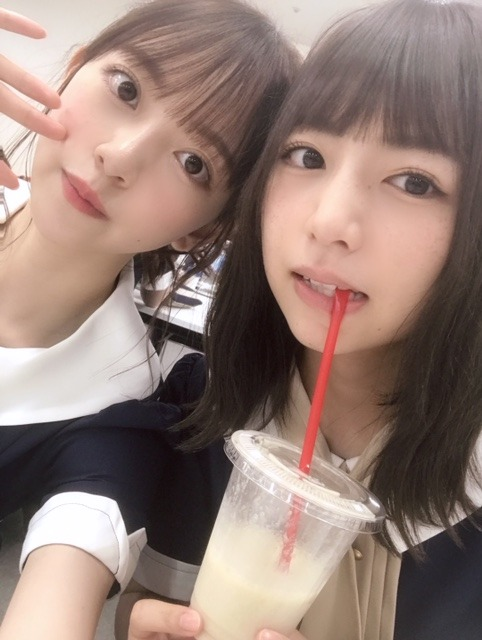

2019/0827Tue甘さが欲しい
やほ~
今日は、
水色のワンピースに水色のバッグで撮影にむかいました
小さいバッグにはお財布、持ち運び用香水、イヤフォン、ヘアブラシ、リップが入ってます☺︎
いただいたフルーツを持って
今日は早くお家に帰ってこれました幸せです
家族で夜ごはんを食べて
今は魔女の宅急便を観ています
何百回観たかわからないけどやっぱりいつ観てもほっこり。落ち着きます
色味も音楽も話の内容もトータルで好き
1番好きなジブリ作品...❤︎

フルーツだいすき人間


ふざけてる時が1番楽しい☺︎
今日は23:58からTBS その他の人に会ってみた
に梅ちゃんと出演します❤︎
是非、見てください
感想お待ちしてます~

では！
2019/08/27 19:24


コメント(281)
今日も１日お疲れ様
未央奈ときぃちゃん、未央奈とみなみん
2ショット めっちゃかわいい！
癒される~
ライブ頑張って
質問です！
今、一番好きな漫画は何ですか？
撮影お疲れ様でした。
テレビ見ます。
本当に本当に更新頻度高くて嬉しいし、読むと元気になります☺︎
What’s in my bag してくれた~♡嬉しい☺︎
バッグもおしゃれです~
未央奈ちゃんみたいなステキな人にいつかなりたい…
私もフルーツ大好き人間！！今日は桃とぶどうをたべたよ~
きぃちゃんとの2ショットも~癒されます~
私はライブ落選したのでライブビューイングします！！
ライブ楽しんでね！
無理しないで頑張ってね
あっあと今日の梅ちゃんとのテレビもばっちり録画しました~楽しみです！
くすみですね。くすみ。
そしてグーチョキパン店！
フルーツいいね～
自然の甘味ですね
(一部酸味もありますが･･･レ･･･とか？笑)
威嚇してなくても十分に･･･
いい写真だ～～
赤と青！
･･･信号？(笑)
お疲れかな？
水色のワンピースと水色のバック、オシャレで可愛いですね。
流石の水色、映えるのでしょうね。
フルーツも美味しそうです。見た目もオシャレ！
甘かったかな？羨ましいです。
自分も愛犬もフルーツ好きです。
でも犬にブドウはダメなのですよね、それが残念で。
ブルーベリーは、適量なら大丈夫なのですが。
北野さんとの写真、自然な雰囲気で和んでる様子ですね。
ふざけてる表情だけでも見たいです。
その人に会ってみた は、録画予約済です。
楽しみです。
今日、神宮会場限定のチャコールと白2種類のTシャツが届きました。
自分は2日目と3日目に行くので、両日とも未央奈さんとお揃いになれたら嬉しいです。
日中も神宮の事が頭から離れず、落ち着かないです。
ホント楽しみです。
その付近は、また気温が高くなりそうだとか、夏の締めの最高の思い出にしたいですよね。
来年は、ライブに行けるかも分からないし、この瞬間を大切に楽しみたいです。
お互いに身体には気をつけないとですね。
頑張って行きましょう！
ブログ更新、ありがとうございます♪
なんと、今は甘さが欲しいんですね‼︎
どうやら、黒糖って甘いらしいですよ(笑)。
ぜひぜひ♪
今日は、水色のワンピースに水色のバッグで撮影に向かったんですね‼︎
ちゃんと色を合わせるあたり、さすがですね〜
写真は、どういうアングルで撮っているんだろう？
全体的な水色ベースの色味と、金色の金具との相性も良くて、とっても上品な雰囲気♪
できれば着ているところも見てみたいけど、また次のお楽しみですね‼︎
今日は既に仕事も終わって、早めに家に帰ってこれたんですね。
良かった良かった♪
魔女の宅急便、いいですよね〜
ジブリの独特の癒しの雰囲気と、港町の爽やかな空気が相まって、観ていてとても清々しい気持ちになります♪
あの港町、クロアチアのドブロブニクがモデルとなったという噂ですが、一度行ってみたいんですよね〜
アドリア海の真珠とも謳われる町。
その場所に立つだけで、心がキラキラしそうです♪
一生懸命やっても報われなかったり、スランプに陥ったり。
それでも、周りの優しい人たちに支えられながら、1つ1つ乗り越えて、キキは成長していく。
宮崎駿さんは、東京に出てきて荒波に飲まれながらも頑張っている新社会人を見て、ヒントを得たようです。
乃木坂にも、地方から出てきて頑張っているメンバーがたくさんいますよね‼︎
もちろん、未央奈もその一人。
そういう意味でも、心に響くのかもしれません♪
そうそう、今日は『その他の人に会ってみた』の放送日ですね。
忘れずにチェックしますね‼︎
ではでは、また。
明日も未央奈にとっていい1日になりますように♪
また暑くなるらしいですよ
きょんばんはーーー！！！
令和始まって以来のウルトラ
スーパー天才？(笑)あんちゃん
The money
Kid dynamite
魂の男ルカ・モドリッチに感動ー涙
どぅえーーーす！！！
バッグおしゃれ！
クロコダイルの型押し？
小さいから荷物少な目！
水色のモノトーンす・て・き♪
TV観るねー
いつもこのくらいの時間に
放送があると助かる♪
体調大丈夫かな？？
その他の人に会ってみたリアタイで見れないから
予約して後で観るねー！
ヤバイなぁ。見ればみるほど引き込まれるよ。
さぁ、神宮だね。未央奈タオルと、サイリウム2本づつで、スタンバイしてます。名古屋の個握も楽しみだよぉ。身体に気を付けてねぇ。
その他の人に会ってみた見ます!
これからも頑張ってくださいね
応援してるからね。
体調はどうですか？
神宮球場でのライブまであと3日なので体調を崩さないように気をつけて頑張ってください！
ライブには行けないけど、ライブビューイングで見るよー
フルーツ美味しいよね！
みんな可愛すぎる！！
その他の人に会ってみた、見るよー！
大好きです！
神宮ライブ見に行くよ〜
体調気をつけてねー
堀ちゃん、大好きだよー
日奈子さんとのツーショット超可愛いです！
TV絶対見ます！
ライブ頑張ってください
これでブログ3日連続更新ですね。
ありがたや
体調完全に回復したみたいだね。
さすが堀ちゃん。
魔女の宅急便また見てるんだ、ほんと好きだね。
我が長野 その他の人に会ってみた
やりません(泣)見たかったな。
なんとかしてください(笑)
またブログ更新楽しみにしてます。
では
バイバイキーン
おしゃれだし可愛いし本当に女の子の憧れです♡
未央奈みたいになれるように頑張ります！
今日は女の子らしいブログですね！
（って言ったら怒られそうだけど）
23:58からTBS「その他の人に会ってみた」って
北海道ではやっていません！
「ジンギス談」って番組、なんだかなぁ～！
でもレコメンは聴きますよ～！！！
これからも頑張ってくださいね！！！
未央奈ちゃんのペースで、
未央奈ちゃんらしく！！！
体調大丈夫かな？
無理しないでねー
ボクも魔女の宅急便がジブリで1番好きです♫
暑いし、忙しいと思うけど体調に気を付けて頑張って下さい！
先日読んだ本にトンボのみたいな自転車で校舎の屋上からダイブした女の子出てきた！笑笑
主人公の成実（といっても男の子。）がキキみたいだったらフワッと飛べたのに？笑
でも結局最後は飛んじゃうんだけど。笑 それも成実が。笑（あれは"飛んだ"と言えるのかな？笑）←この"笑"は私の"笑"で物語自体は青春感動巨編かも？笑
という報告。笑笑
コメントが抜けてましたので追加します。
魔女の宅急便で癒され、幸せでしょうか。
ジブリ作品は、何度観ても癒やしの世界感、貴重な存在ですよね。
未央奈さんにとって、魔女の宅急便との出会いは、必然だったのでしょうね。
自分も、金曜日に魔女の宅急便観て、土曜日の神宮に備えようかな。
TVで放送されるラピュタは、録画しますかな。
頑張って行きましょう！
家族と、ほっこりされたのですね。「ほっと」しますよね。
すっかり元気になったみたいで良かったです！
私も魔女の宅急便が一番好きなジブリ作品です！
何回見てもその度に新しい発見があるし、ほっこりしますよね笑
未央奈ちゃんのポニーテール大好きだから、
すぐに写メを保存させていただきました笑
私の癒しです笑
今週末のライブ頑張ってくださいね！
最近は寒暖差が激しいので、体調には十分に気をつけてくださいね！
いつも応援してます！
でもかわいいです！ またセンターみたいよー！
葡萄、美味しいよね☺
私もフルーツだいすきです！
きいちゃんとの写真も
ありがとう(*´∇｀*)
ポニテ可愛かったよ
連日のブログ更新ありがとうございます。ブログに限らず、７５５も地道に更新、お忙しいにも関わらず、更新ホントありがとうございます。
ずっとデビューの時からこうして地道に更新、これが未央奈の魅力でもあり、うれしくなります。
特に「魔女の宅急便」をはじめジブリについて語るときは、ホント生き生きしていますね。そして、大好きなフルーツ、未央奈のみすみずしさの源でもありますよね。
「その他の人会ってみた」、名古屋地区は遅れて放送なので、それまで楽しみにしておきます。
さぁ、いよいよ神宮３日間ライブも直前となりました。体調は、もう大丈夫ですか？ 絶対に、無理はしないで下さいよ。ご活躍、お祈りしております。
みおなちゃんの今の前髪が大好きなんですが、どうやって前髪セットしてますか？？教えてほしいですー！
メイク系の話も最近話題に出ることが多くて嬉しい！また待ってます！
今日も可愛いね(*♥д♥*)
海の見える街良いよね✨
テレビチェックするね～！
前回の体調不良はもう治りましたか？無理しないでね。
ジブリの名作はずーっと愛され続けるのでしょうね。「16歳の時に好きだったものが、ずーっと好きなんだよね」と言った人がいましたが、未央奈ちゃんにとってのジブリはまさにそれなんでしょうね。私の場合は16歳の頃好きだったバンドが今でも好きです。
その他の人に会ってみた、録画予約しました！！今まさに録画中です。感想は後程。
ではまた。
抹茶オレにハマっちゃったオレ
あとやっぱり全身一色の服装を着こなせる女性は本当に凄いと思います、オシャレです！
そういえばこの前テレビでポニョがやってて映画館で観たとき以来だったんだけど当時自分は保育園児だったので今みると全く違う映画かのようにすら感じました。映画を観るにあたってやはり受け手の性格、環境はすごい大事ですね。だからこそいろんな人と感想を共有しあうと面白い(^^)
今「その他の人に会ってみた」観ながらブログ書いてます。変わった生き方というか大勢に含まれない生き方を観て「こういう道もあるんだな」とか「こんな仕事もあるんだな」と思って凄い勉強になります。もしかしたらアイドルもその他の人に当たるのかもしれませんね。
最近は朝と夜はクーラーがいらないぐらい涼しくなってきましたね。もうすぐ秋になっちゃうので残りの夏を楽しみたいと思います！
名古屋での個握よろしくお願いしますm(__)m
あと次のシングルからは今まで行っていなかった全握にもお邪魔しようと思います。よろしくお願いします。
では！！
TBS系列の信越放送を付けたら、やって無かった。
ガッカリ過ぎる。涙！
弘中アナのロリータファッション、スゲー似合ってる。
みおたんもロリータファッションで弘中アナとのツーショットを期待します。
それでは健康第一で！
信州のミッキイでした！
体調大丈夫？？
それにしてもかわいすぎます。
コメントする